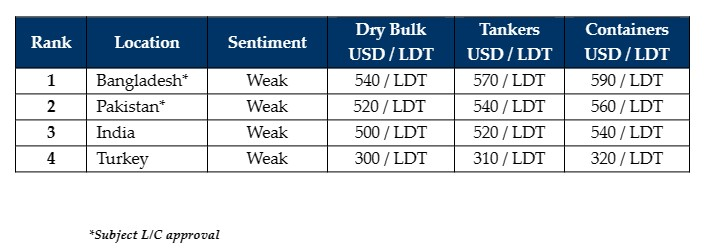

inWeekly Demolition Reports24/07/2023

Prices continue to struggle across all of the major ship recycling markets, as Bangladesh further declined off of the back of depreciatingcurrencies and sustained L/C struggles, while Turkey suffered similarly with declining steel plate prices, the Lira, and finally, its vessel prices.
The supply of tonnage seems to have increased just slightly over the last couple of weeks (particularly from the Chinese market) and as such, many Owners and Cash Buyers have been left chasing down various recycling destinations amidst weakening prices.
As forecasted a few weeks ago, Pakistan finally seems ready to return into the game and has even overtaken an extremely lackluster Indian market wherefrom, lowball offers of below USD 500/LDT seem to be coming regularly in, with little success for all parties involved. As such, it may take some time to work through the L/C issues in Pakistan, but it is certainly encouraging to see various offers come back close to currently competitive levels.
On the supply side, it has mostly been vessels from the Dry Bulk sector that continue to be introduced to the recycling markets, especially older Panamax and Handy units built in the 90s that are perhaps overdue for retirement from their respective fleets.
Post budget in Bangladesh has certainly been more difficult to get Central Bank approval on fresh L/Cs, but things seem to have eased up a touch this week as local Buyers are emerging once again, just as the tonnage flow is also increasing.
Finally, the Turkish market seems to have taken a turn for the worst, as import and local steel prices, the Currency, and even vessel prices have all taken a tumble during this week, with some vessel indications reportedly coming in even below USD 300/MT.
Overall, it will certainly take some time to absorb many of the unsold vessels not only being freshly proposed into the markets, but also those units in Cash Buyer hands and as such, sentiments and demand may remain somewhat muted for some time – at least until the monsoons start to subside.
For week 29 of 2023, GMS demo rankings / pricing for the week are as below.

📄 Download PDF: Ship-recycling-market-insight-week-29-2023-Decline-and-Fall.pdfSource: GMS,Inc. ,https://www.gmsinc.net/gms_new/index.php/web